Last updated: 2018-01-28
Loading required package: ashrcorrplot 0.84 loadedThe data contains 10 conditions with 10% non-null samples. For the non-null samples, it has equal effects in the first c conditions.
Let L be the contrast matrix that substract mean from each sample.
\[\hat{\delta}_{j}|\delta_{j} \sim N(\delta_{j}, \frac{1}{2}LL')\] 90% of the true deviations are 0. 10% of the deviation \(\delta_{j}\) has correlation that the first c conditions are negatively correlated with the rest conditions.
We set \(c = 2\).
Using mashcommonbaseline, there are 288 discoveries. The covariance structure found here is: 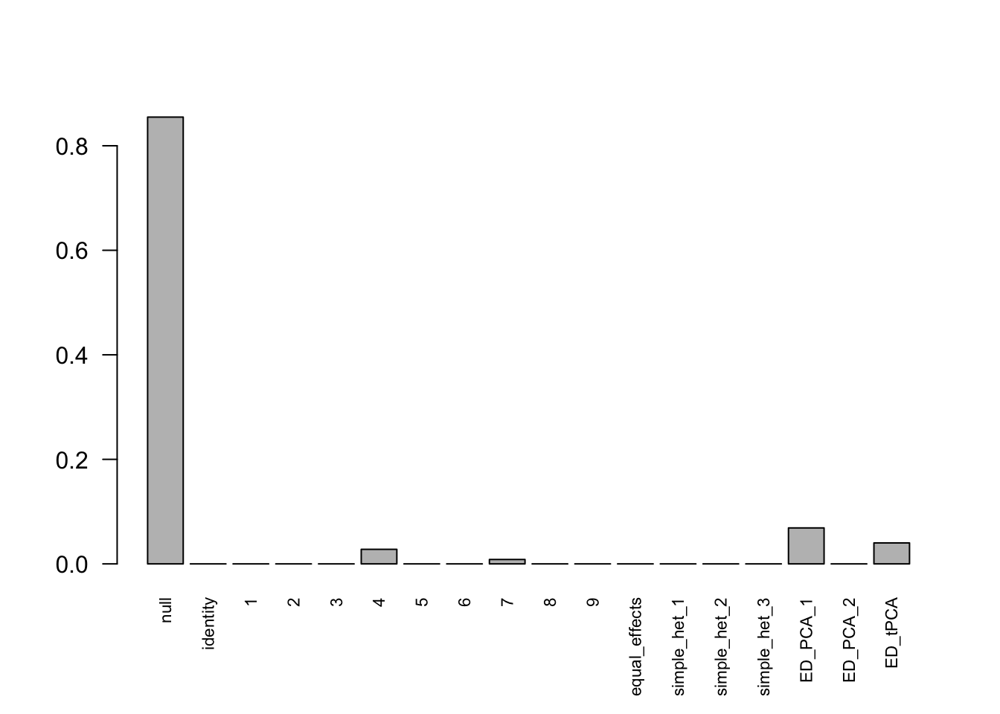 The correlation for PCA1 is: 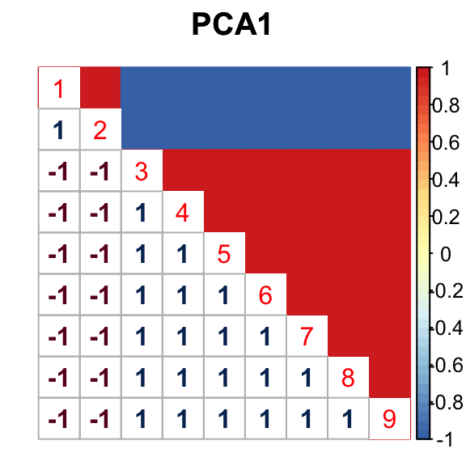
The correlation identified here is correct.
If we subtract the mean from the data directly \[Var(\hat{c}_{j,r}-\bar{\hat{c}_{j}}) = \frac{1}{2} - \frac{1}{2R}\]
There are 336 discoveries, which is more than the mashcommonbaseline model. The covariance structure found here is: 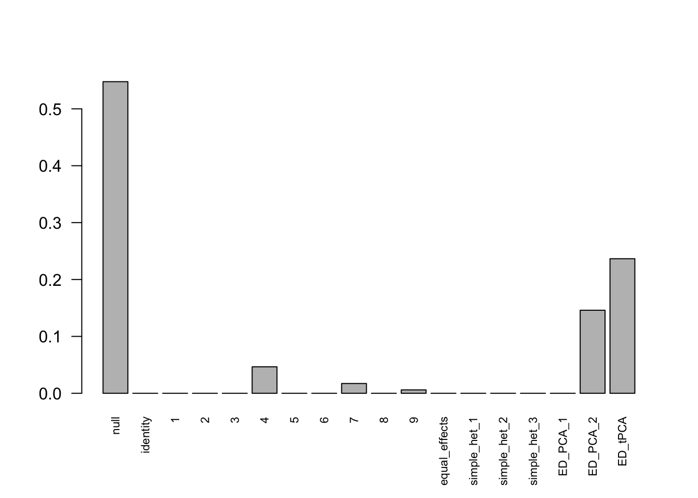 The weights for covariances are very different.
The correlation for PCA2 and tPCA is: 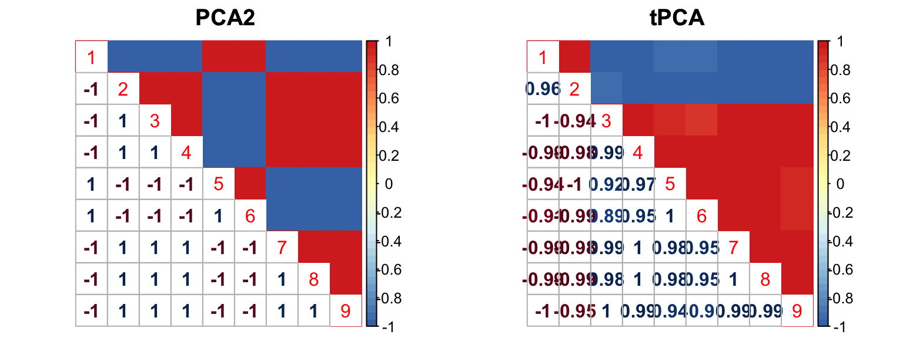
We try an example with the miscalculated variance of mean. The reason to include this example is that the variance of median is hard to compute (not iid data), if we subtract median from the samples directly. We want to test whether the misspecified variance could influence the result.
The following model is fitted under miscalculation of \(Var(\hat{c}_{j,r}-\bar{\hat{c}_{j}}) = \frac{1}{2} + \frac{1}{2}\).
There are 91 discoveries, which is less than the mashcommonbaseline model and Indep model. The covariance structure found here is: 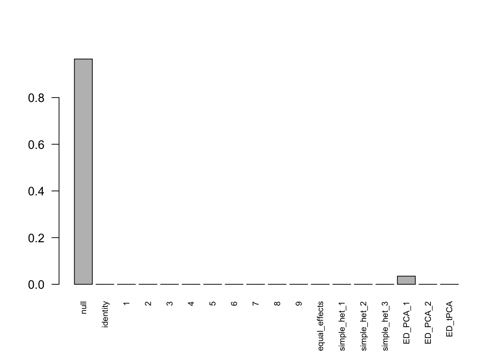
The RRMSE plot: 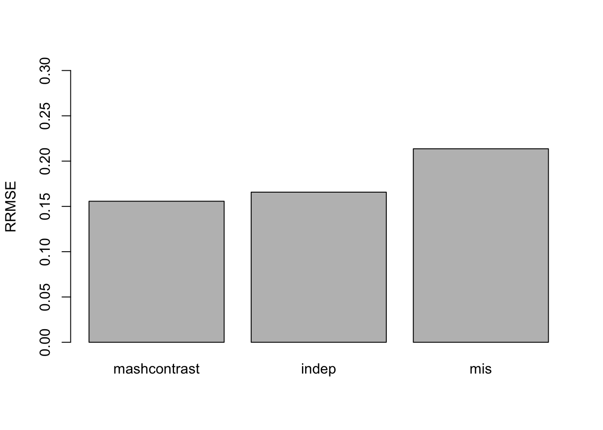
We check the False Positive Rate and True Positive Rate. \[FPR = \frac{|N\cap S|}{|N|} \quad TPR = \frac{|CS\cap S|}{|T|} \]
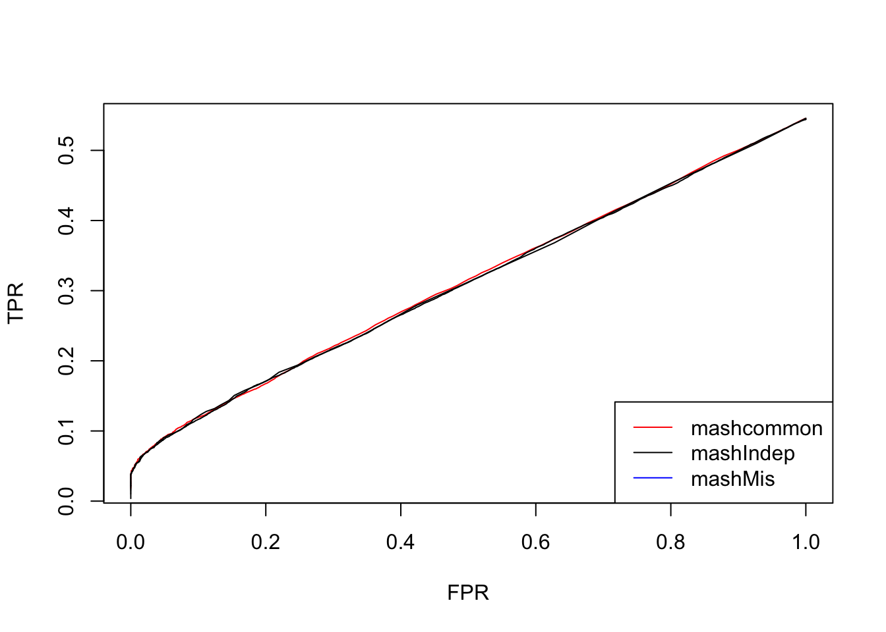
These three methods are similar in terms of the number of false positives versus true positive. However, the miscalculated model has low accuracy of the estimated deviations. Therefore, if we want to subtract median from the samples directly, we need to be careful about variance of the contrast.
The data was generated with signals in the first c conditions (\(c_{j,1}, \cdots, c_{j,c}\)). The contrast matrix L used here discards the last condition. The deviations are \(\hat{c}_{j,1} - \bar{\hat{c}_{j}}, \hat{c}_{j,2} - \bar{\hat{c}_{j}}, \cdots, \hat{c}_{j,R-1} - \bar{\hat{c}_{j}}\).
However, the contrast matrix L can discard any deviation from \(\hat{c}_{j,1} - \bar{\hat{c}_{j}}, \cdots, \hat{c}_{j,R} - \bar{\hat{c}_{j}}\). The choice of the discarded deviation could influence the reuslt.
We run the same model with L that discard the first deviation.
Using mashcommonbaseline model, there are 283 discoveries. The covariance structure found here is: 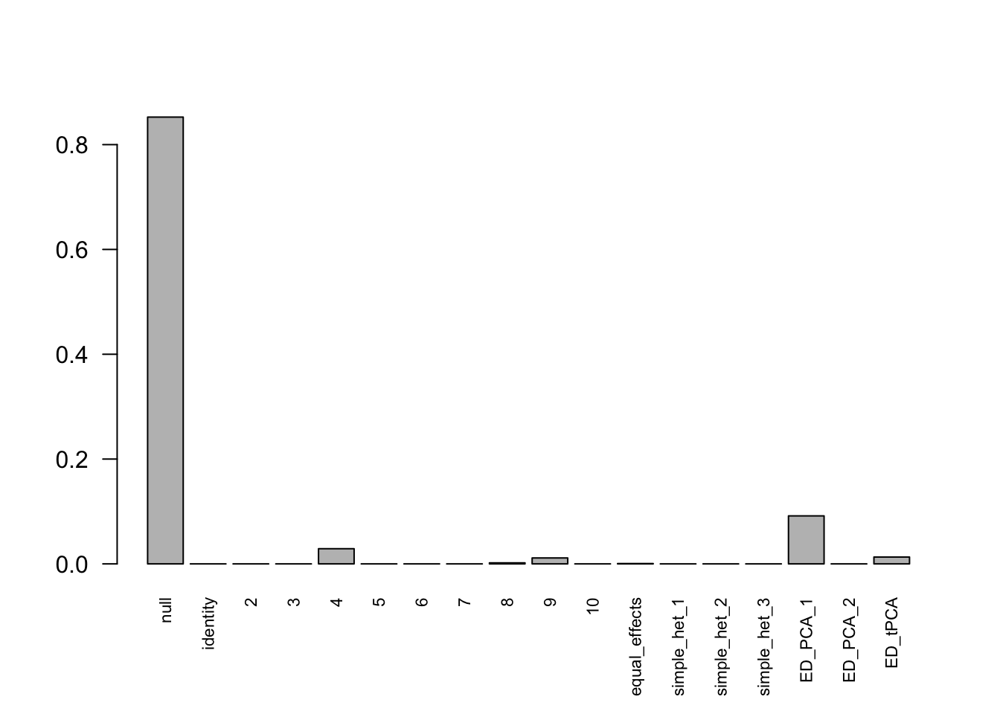 The correlation PCA 1 is: 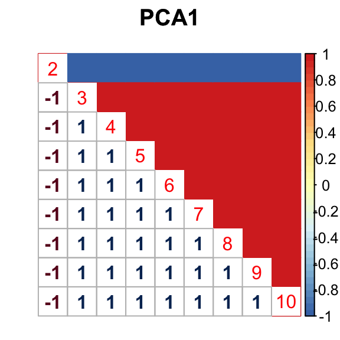
For mashIndep model, there are 217 discoveries, which is less than the mashcommonbaseline model. The covariance structure found here is: 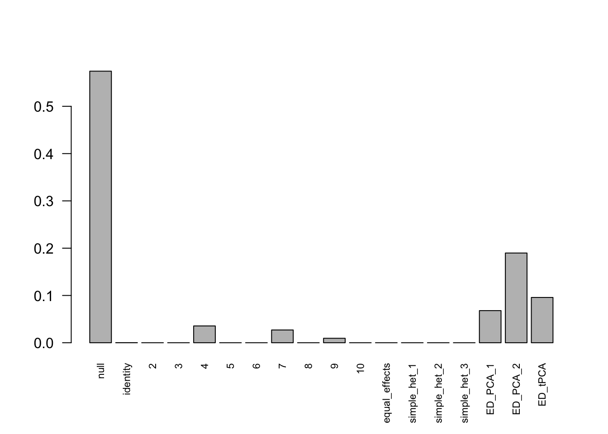
The correlation for PCA2 and tPCA is: 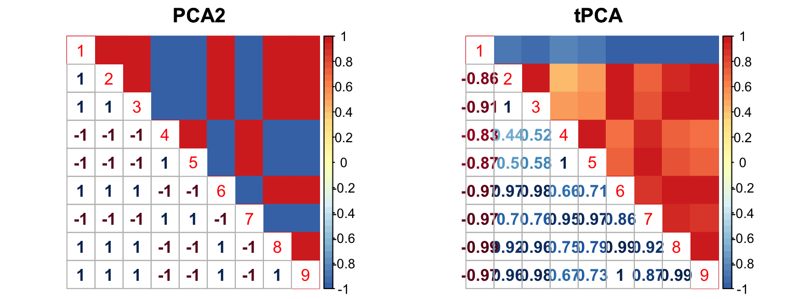
The RRMSE plot: 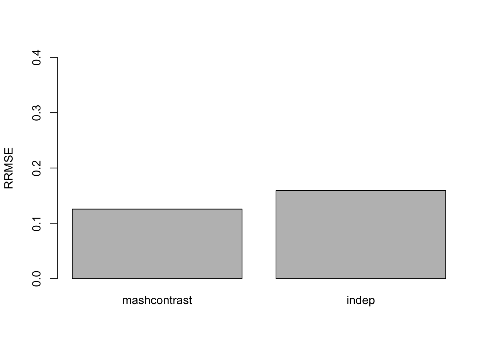
We check the False Positive Rate and True Positive Rate. \[FPR = \frac{|N\cap S|}{|N|} \quad TPR = \frac{|CS\cap S|}{|T|} \]
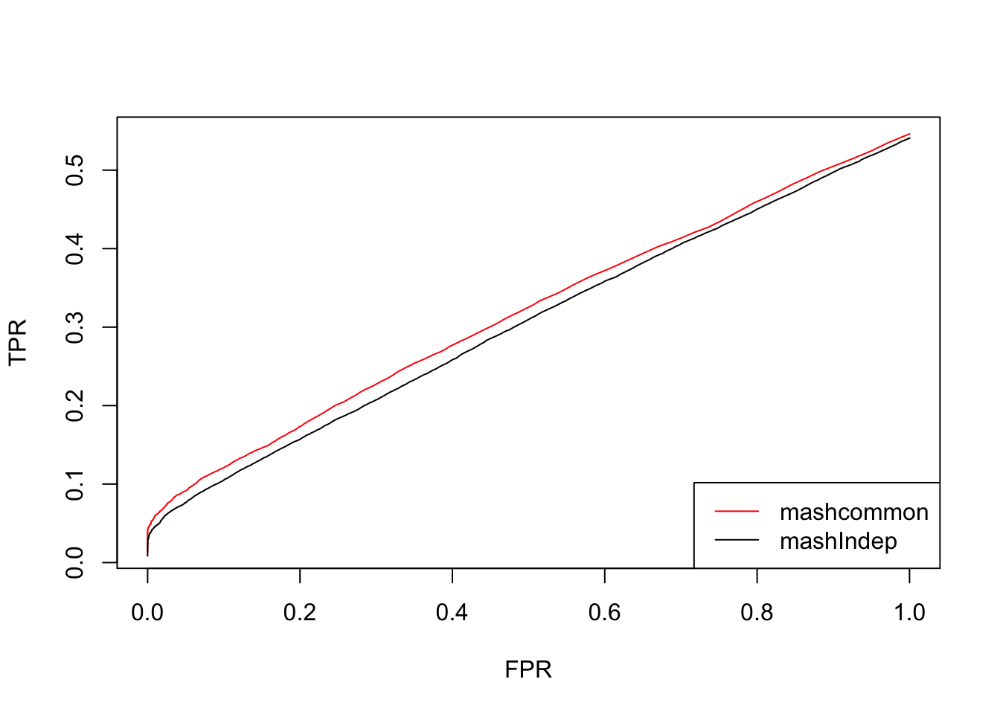
Using this contrast L, the results from mashcommonbaseline is slightly better than mashIndep.
The choice of L could influence the result.
sessionInfo()R version 3.4.3 (2017-11-30)
Platform: x86_64-apple-darwin15.6.0 (64-bit)
Running under: macOS High Sierra 10.13.2
Matrix products: default
BLAS: /Library/Frameworks/R.framework/Versions/3.4/Resources/lib/libRblas.0.dylib
LAPACK: /Library/Frameworks/R.framework/Versions/3.4/Resources/lib/libRlapack.dylib
locale:
[1] en_US.UTF-8/en_US.UTF-8/en_US.UTF-8/C/en_US.UTF-8/en_US.UTF-8
attached base packages:
[1] stats graphics grDevices utils datasets methods base
other attached packages:
[1] corrplot_0.84 mashr_0.2-4 ashr_2.2-3
loaded via a namespace (and not attached):
[1] Rcpp_0.12.15 knitr_1.17
[3] magrittr_1.5 REBayes_1.2
[5] MASS_7.3-47 doParallel_1.0.11
[7] pscl_1.5.2 SQUAREM_2017.10-1
[9] lattice_0.20-35 ExtremeDeconvolution_1.3
[11] foreach_1.4.4 plyr_1.8.4
[13] stringr_1.2.0 tools_3.4.3
[15] parallel_3.4.3 grid_3.4.3
[17] rmeta_2.16 htmltools_0.3.6
[19] iterators_1.0.9 assertthat_0.2.0
[21] yaml_2.1.16 rprojroot_1.2
[23] digest_0.6.13 Matrix_1.2-12
[25] codetools_0.2-15 evaluate_0.10.1
[27] rmarkdown_1.8 stringi_1.1.6
[29] compiler_3.4.3 Rmosek_8.0.69
[31] backports_1.1.2 mvtnorm_1.0-7
[33] truncnorm_1.0-7 This R Markdown site was created with workflowr